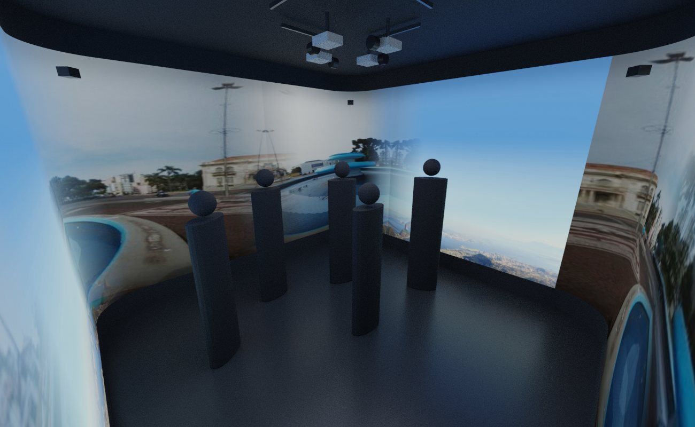
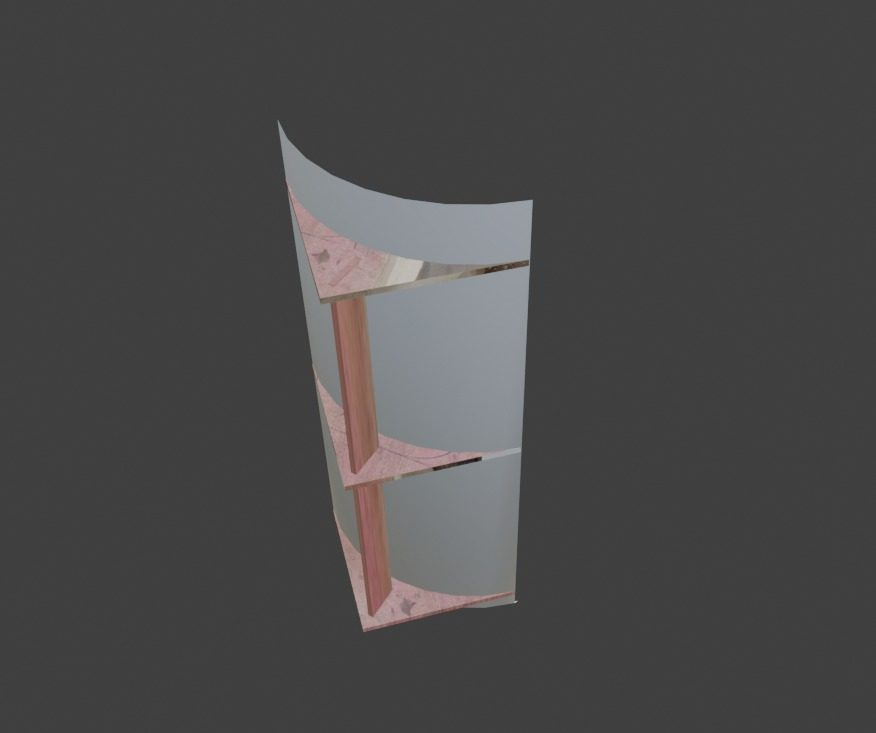
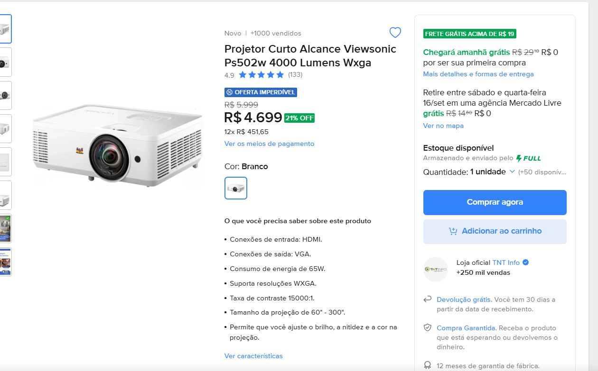
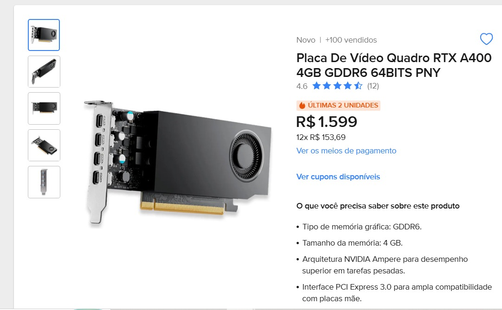

01 · Estrutura, equipamentos e implantação
Erechim em
quatro paredes.
Uma sala para vivenciar a cidade, com vídeo em loop e áudio envolvente. A Delumo produz o conteúdo, instala o sistema e acompanha a feira.

Ideia de estrutura
Sala escura. Cantos suaves.

- Quatro projetores no teto, um por parede.
- Paredes brancas foscas; piso e teto escuros.
- Entrada com blackout, ventilação e saída livre.
- Estrutura e elétrica pelo CIT e pela montadora.
Lotação, circulação e sombras precisam de teste no espaço.
Ajuste necessário: o PS502W produz 4 × 2,5 m a cerca de 2,08 m da parede. Cobrir os 3 m de altura exige outro posicionamento e recorte. Validar também a altura da lente e os cantos antes da compra.
Tecnologias · comparação para decisão
Projetor ou LED?
A projeção favorece a compra e a reutilização. O LED favorece o brilho e a circulação perto das paredes.
| Critério | 4 projetores PS502W | Painéis LED |
|---|---|---|
| Investimento de referência | R$ 35.299 · compra de equipamentos* | R$ 37.000 · locação informada* |
| Após a feira | Equipamentos ficam com o CIT. | Na locação, retornam ao fornecedor. |
| Imagem e luz ambiente | 4.000 ANSI lm por aparelho. Melhor em sala escura. | Brilho próprio; tolera mais luz ambiente. |
| Definição por parede | 1.280 × 800 nativos; recortes reduzem a área útil. | P2.5 em 4 × 3 m: ≈ 1.600 × 1.200 pixels, conforme montagem. |
| Visualização de perto | Pixels podem aparecer na imagem ampliada. | Pixels também podem aparecer. Testar o painel à distância real. |
| Cantos arredondados | Possíveis, com ajuste da imagem e das sobreposições. | Exigem solução curva/flexível ou adaptação dos cantos. |
| Sombras dos visitantes | Podem ocorrer ao bloquear o feixe. | Sem sombras causadas por feixe de projeção. |
| Peso e espaço | 11,48 kg só nos quatro aparelhos; somar suportes. | Peso e espessura dependem dos painéis e da sustentação. |
| Energia | 1,18 kW típicos só nos projetores; somar PC e áudio. | Solicitar consumo típico e máximo do conjunto. |
| Vídeo em loop | PC + quatro saídas; imagem ajustada para cada parede. | Player/PC + processadora; arquivo no mapa de pixels. |
| Operação e manutenção | Conferir alinhamento, foco e lâmpadas. | Conferir módulos, fontes e calibração. |
| Fotos e vídeos do público | Testar com celulares e câmeras. | Testar atualização, varredura e câmera em conjunto. |
*Preços recebidos, sujeitos a cotação. Confirmar área coberta pelo LED: quatro paredes planas inteiras somariam 48 m², antes dos ajustes de entrada e cantos. Os dois valores não representam escopos equivalentes já homologados.
Equipamentos de referência
Projetor e placa de vídeo.


Custos e responsabilidades
O que entra no investimento.
| Equipamentos | Total |
|---|---|
| 4 projetores · R$ 5.900/un. no orçamento | R$ 23.600 |
| Computador dedicado | R$ 4.200 |
| Placa RTX A400 | R$ 1.599 |
| Amplificação e 4 caixas | R$ 2.400 |
| 4 suportes | R$ 1.000 |
| Cabos e adaptadores | R$ 1.600 |
| Nobreak · capacidade a validar | R$ 900 |
| Subtotal de referência | R$ 35.299 |
Vídeo + implantação + suporte presencial
A definirInclui treinamento e acompanhamento nos 11 dias. Já contempla o vídeo da proposta 02.
Estrutura à parte: CIT e Mariga Eventos, conforme indicação recebida.
A confirmar: interface de áudio de quatro saídas, software, monitor, nobreak, frete e contingência.
Pagamento dos serviços: 40% no aceite, 30% no corte final aprovado e 30% no sistema operacional. Entrega dos equipamentos deve permitir os testes de outubro.